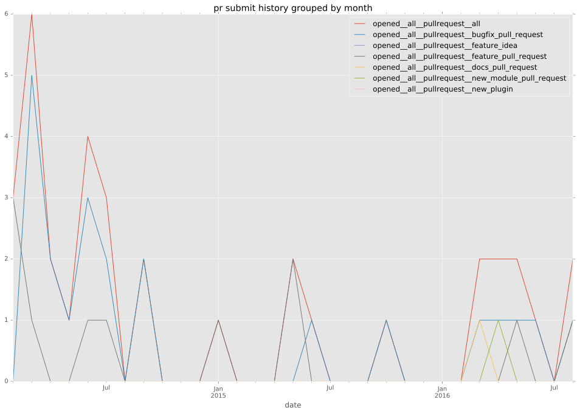
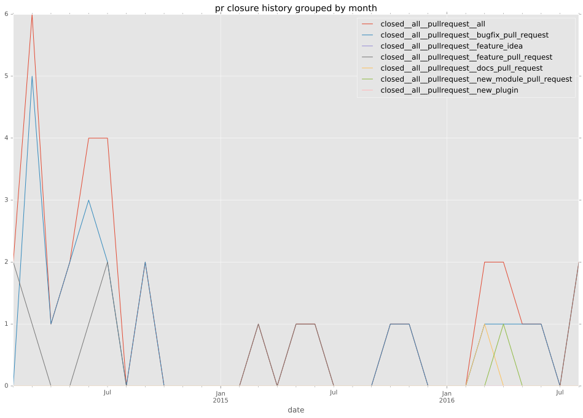

total issue counts
feature pull request: 15
pullrequest: 48
docs pull request: 2
bugfix pull request: 31
feature idea: 10
issue: 42
bug report: 32
issue history
pullrequest history


days open by issue type
bugfix pull request
count: 48
std: 28.5496876186
min: 0
max: 151
median: 0.0
mean: 9.35416666667
all
count: 111
std: 85.5505109645
min: 0
max: 431
median: 1.0
mean: 38.2702702703
pullrequest
count: 0
std: nan
min: nan
max: nan
median: nan
mean: nan
docs pull request
count: 4
std: 10.9696551146
min: 0
max: 19
median: 9.5
mean: 9.5
feature pull request
count: 20
std: 49.8613604223
min: 0
max: 185
median: 3.5
mean: 24.55
feature idea
count: 7
std: 168.826763845
min: 0
max: 420
median: 275.0
mean: 195.857142857
issue
count: 0
std: nan
min: nan
max: nan
median: nan
mean: nan
bug report
count: 32
std: 100.466527687
min: 0
max: 431
median: 13.0
mean: 59.34375
closures grouped by total days open